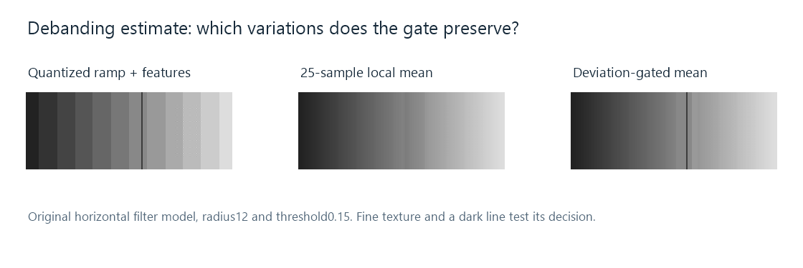

Video Debanding
Debanding estimates smoother picture values where a gradient has collapsed into visible steps, while attempting to preserve genuine structure.

Original model: a 16-level background ramp, a dark line, and a patch of fine low-contrast texture. The smoothing footprint contains 25 horizontal samples. The gate uses a maximum component deviation below 0.15. This is a teaching example, not a capture from a named filter.
Debanding estimates a smoother surface in regions where quantization or prior processing has produced visible steps. Its difficult decision is which variation belongs to an unwanted band boundary and which belongs to the picture's real structure.
For an Emby source that already shows bands in its decoded frames, this is a different task from simply assigning a higher output bitrate. The operation needs to calculate new sample values. Color banding explains where the original plateaus can arise.
An estimate from neighboring values
Suppose a boundary joins a plateau at 0.4 to a plateau at 0.466667. A local mean crossing that boundary can create intermediate values. As the footprint moves across the edge, its mixture of the two plateaus changes gradually.
For example, a window with fifteen samples at 0.4 and ten at 0.466667 gives approximately:
(15 × 0.4 + 10 × 0.466667)/25 = 0.426667.
That value was absent from either plateau. It is an estimate based on nearby information, representing one possible smoother transition. Several different original gradients could have produced the same quantized plateaus, so the operation's neighborhood and assumptions determine the constructed result.
The middle image applies a horizontal local mean everywhere. It softens the bands, but also spreads the narrow dark line and changes the fine checker-like texture. The same averaging cannot know which of those changes the viewer wanted.
A variation test limits where smoothing is used
The third image uses the same mean only when every sample in its neighborhood is sufficiently close to the center value. In the model, the maximum difference must be below 0.15. Otherwise the original center value is retained.
The dark line differs by about 0.3 from its background, so the test rejects smoothing there. A single background quantization step is about 1/15, or 0.066667, and can pass the test. The fine texture's small deviations can also pass it and be smoothed.
This exposes the central tradeoff through an actual decision rule. A lower threshold preserves more variation but may leave bands. A higher threshold admits stronger smoothing and can include genuine texture. A larger neighborhood spans broader structures and reaches farther across edges.
Practical debanders can compare selected neighboring positions, estimate local gradients, or use other edge-sensitive decisions. FFmpeg documents neighborhood distance, thresholds, and component handling for its debanding filters; libplacebo documents its renderer's controls. The illustrated gate is a deliberately simple independent model of that decision.
Precision after the estimate
The smoother estimate can contain values between the source's original codes. If it is immediately rounded back to the same coarse grid with the same correlated decisions, visible steps can return.
Suitable working precision keeps the estimate available until the required output conversion. Dithering can distribute that later rounding across positions. Debanding estimates a surface; dithering controls the representation of a calculated surface on a finite value grid. They act at different parts of the process.
The PNG shows the model through a finer ordinary 8-bit preview grid than its deliberately 16-level source ramp. Its smooth appearance does not claim that every real eight-bit video acquires additional original precision through filtering.
A comparison needs both a gradient and detail
| Feature to inspect | Question it answers |
|---|---|
| A broad, smooth sky or wall | Are the step contours less apparent? |
| Fine low-contrast surface texture | What genuine variation has been changed? |
| A narrow contrasting line | Has the decision preserved its shape? |
| The same passage during motion | Does the estimate remain stable from frame to frame? |
A renderer's debanding changes the displayed picture. A server-side filtered conversion also needs to encode the altered frames, and that encoding can change their newly estimated variations. Comparing the delivered frames and the final presentation keeps those effects identifiable.
In the figure, the dark line survives the gated estimate while some fine texture is altered. Those two observations together describe the model's result more accurately than examining the smooth gradient alone.